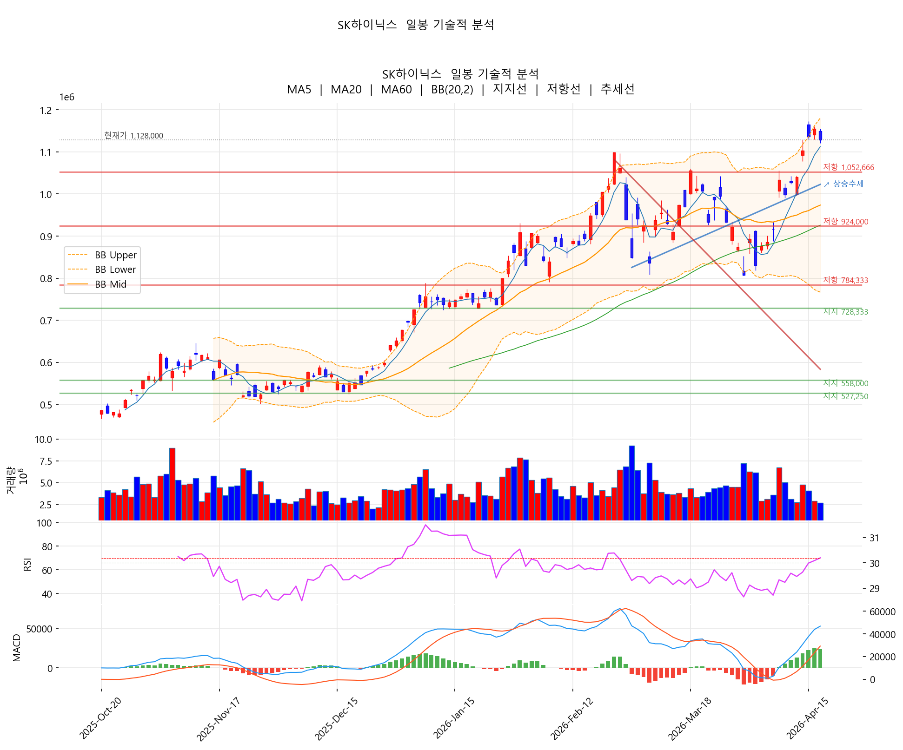
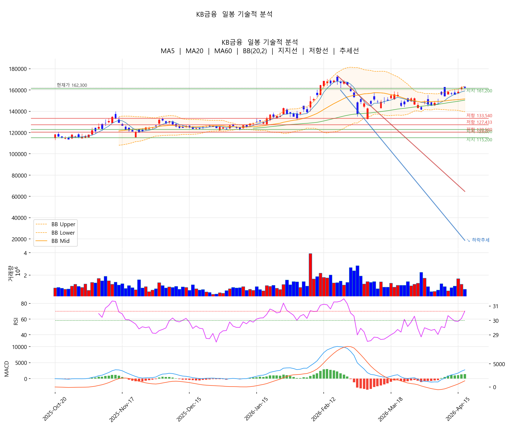
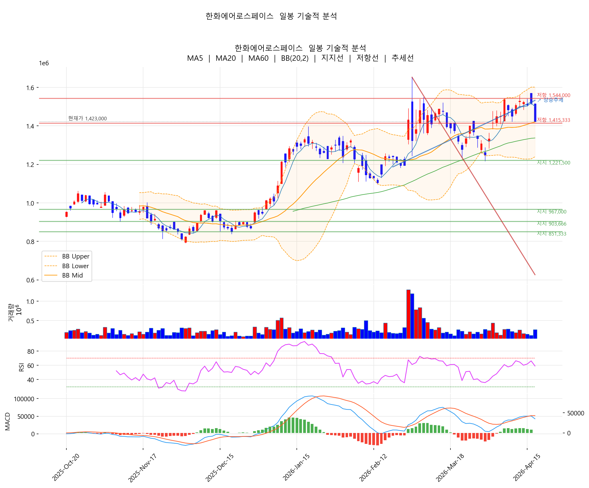
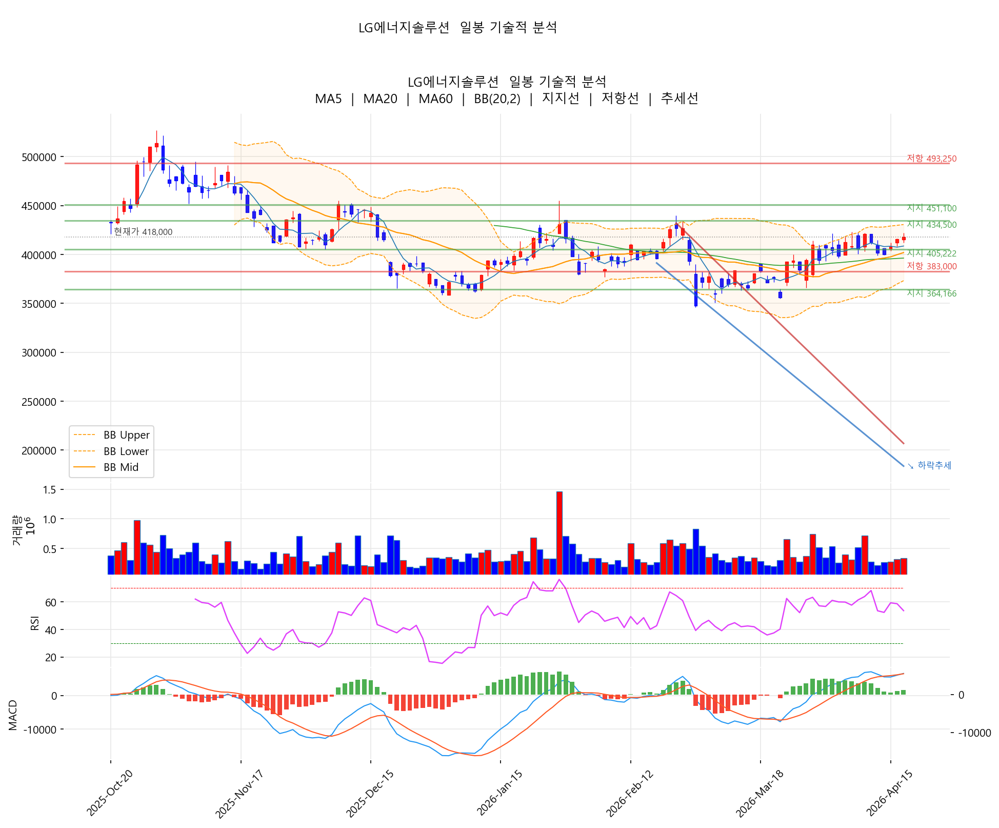

[4월 17일 마감 리뷰] 종전 기대에 방산 직격 -6.32%, AI부품·2차전지 소재로 자금 이동
한줄 요약
코스피 6,191.92 (-0.55%)로 소폭 조정했지만 6,000선 위를 유지. 미·이란 종전 가능성 + 이스라엘·레바논 휴전 합의 소식에 한화에어로스페이스가 -6.32%로 방산 섹터가 직격을 받았고, 빠져나온 자금이 삼성전기(+6.26%) AI부품과 포스코퓨처엠(+4.92%) 2차전지 소재로 옮겨갔습니다. 외국인은 2조 매도로 전환.
📰 시황 분석 — 종전 기대감, 시장의 자금 흐름을 바꾸다
① 지수: 코스피 6,191.92 (-0.55%)
- "코스피, 0.55% 하락한 6191.92 마감...삼성전자·SK하이닉스 약세" (글로벌이코노믹)
- "코스피 소폭 하락해 6,190선 마감…코스닥은 상승" (KBS)
- 6,000선 위 정체 구간. 대형주는 숨고르기, 코스닥 중소형주 선방
② 외국인: 2조 매도로 전환
- "외국인 2조 매도에 코스피 주춤" (조선일보)
- "코스피 숨 고르기, 코스닥 소폭 상승" (KB Think)
- 연일 순매수를 이어오던 외국인이 방향 전환 — 방산 중심 차익 실현으로 해석
③ 지정학: 미·이란 종전 + 이스라엘·레바논 휴전 = 방산 직격탄
- "한화에어로스페이스 주가 장중 4%대 하락, 미국 이란 종전 가능성에 투심 위축" (비즈니스포스트)
- "뉴욕증시, 이스라엘·레바논도 휴전 합의…강세 마감" (연합뉴스)
- 중동 평화 분위기가 확산되며 방산 수요 기대감이 후퇴 → 한화에어로 -6.32%
④ 환율: 원·달러 1,480원 — 이틀째 소폭 상승
- "원/달러 환율 이틀째 상승…장 초반 1,480원 안팎" (연합뉴스)
- 유가 하락세와 균형을 이루며 큰 변동은 없는 구간
⑤ 미국: 뉴욕증시 이틀 연속 최고치, 종전 기대 강세
- "[3분증시] 종전 불확실성 속 뉴욕증시 이틀 연속 최고치 마감" (연합뉴스)
- 글로벌 위험선호는 여전히 살아 있으나, 한국 시장은 방산 비중이 높아 수혜보다 악재로 작용
주요 헤드라인 (4/17)
• 코스피 0.55% 하락한 6191.92…삼성전자·SK하이닉스 약세 — 글로벌이코노믹
• 외국인 2조 매도에 코스피 주춤 — 조선일보
• 한화에어로 장중 4%대 하락, 미국 이란 종전 가능성에 투심 위축 — 비즈니스포스트
• 뉴욕증시, 이스라엘·레바논도 휴전 합의…강세 마감 — 연합뉴스
• 하나證 "삼성전기, MLCC 업사이클 진입…목표가 상향" — 뉴시스
• K-양극재 '실적 회복' 시동…LFP·음극재·유럽생산 3사3색 전략 — 뉴스1
오늘 시장의 본질: 종전·평화 기대 → 방산에서 이탈 → AI부품·2차전지 소재로 자금 이동이라는 섹터 로테이션이 핵심입니다. 코스피 자체는 -0.55%에 그쳤지만, 한화에어로(-6.32%)와 삼성전기(+6.26%)가 극단적 대비를 보이며 자금 흐름 전환을 보여줬습니다. 외국인 2조 매도도 방산 비중 축소 과정으로 해석됩니다.
주요 종목 등락 현황 (2026-04-17 종가 기준)
상승 TOP 10
| # | 종목 | 종가 | 등락률 | 5일 | 20일 |
|---|---|---|---|---|---|
| 1 | 삼성전기 | 679,000 | +6.26% | +20.18% | +46.18% |
| 2 | 포스코퓨처엠 | 234,500 | +4.92% | +7.82% | +17.72% |
| 3 | POSCO홀딩스 | 385,000 | +4.05% | +4.34% | +12.08% |
| 4 | SK텔레콤 | 98,300 | +2.50% | +5.70% | +24.75% |
| 5 | 에코프로 | 151,900 | +1.81% | +3.76% | +0.66% |
| 6 | 에코프로비엠 | 208,000 | +1.46% | +3.23% | +8.39% |
| 7 | 기아 | 159,200 | +0.82% | +6.85% | -5.52% |
| 8 | 현대차 | 538,000 | +0.75% | +9.91% | +4.06% |
| 9 | LG에너지솔루션 | 418,000 | +0.48% | +1.46% | +11.32% |
| 10 | KT | 63,900 | +0.47% | +2.90% | +5.27% |
하락 TOP 10
| 종목 | 종가 | 등락률 | 5일 | 뉴스 키워드 |
|---|---|---|---|---|
| 한화에어로스페이스 | 1,423,000 | -6.32% | -5.57% | 종전 가능성 → 투심 위축 |
| 삼성에스디에스 | 182,500 | -4.45% | +22.73% | AI 투자 확대 후 차익 실현 |
| SK하이닉스 | 1,128,000 | -2.34% | +9.83% | 증설 속도 이슈 |
| 한미반도체 | 286,500 | -1.88% | +0.17% | 특허분쟁 + 공매도 손실 |
| 삼성생명 | 253,500 | -1.74% | +8.10% | 누적 상승분 되돌림 |
| 삼성전자우 | 146,600 | -1.61% | +4.42% | 삼성전자 동반 |
| 삼성물산 | 301,500 | -1.47% | -0.33% | 건설 약세 지속 |
| LG전자 | 124,200 | -1.43% | +4.90% | 내수 부진 지속 |
| 카카오 | 50,000 | -1.19% | +4.82% | - |
| 알테오젠 | 366,000 | -0.95% | +1.24% | 바이오 약세 |
섹터별 흐름 — 종전 기대가 섹터 지형을 바꾸다
🟢 강세 — 방산에서 빠진 자금의 목적지
AI부품·MLCC (+6.26%) · 삼성전기 CPO기판 + 목표가 상향
- "삼성전기·LG이노텍 'CPO기판' 개발 돌입" (전자신문)
- "하나證 '삼성전기, MLCC 업사이클 진입…목표가 상향'" (뉴시스)
- 종가 679,000원 (+6.26%), 20일 +46.18%. 증권사 목표가 상향 + CPO기판 신사업이 이중 호재. 다만 RSI 84.9로 극심한 과매수 구간.
2차전지 소재 (+4.92%) · 리튬 가격 상승 + 양극재 실적 회복
- "K-양극재 '실적 회복' 시동…'LFP·음극재·유럽생산' 3사3색 전략" (뉴스1)
- "하나증권 '중국 탄산리튬 가격 상승, 포스코퓨처엠 수혜 기대'" (비즈니스포스트)
- 포스코퓨처엠 +4.92%, POSCO홀딩스 +4.05% (리튬 테마), 에코프로비엠 +1.46%, 에코프로 +1.81%, LG엔솔 +0.48%로 2차전지 섹터 전반 반등.
통신 (+1.48%) · '10만텔레콤' 복귀
- "돌아온 '10만텔레콤' SKT…통신주 계산법 바꾼 'AI 자산'" (조선일보)
- "하나證 'SK텔레콤, 5G SA 시대로 진입 본격화…목표가↑'" (뉴시스)
- SKT +2.50% (종가 98,300원), 20일 +24.75%로 중기 추세 상승 가장 강한 섹터.
🟡 보합 — 대형주 숨고르기
반도체 (-1.52%) · SK하이닉스 -2.34%, 삼성전자 -0.69%. "늦어지는 증설에 치솟는 낸드플래시 가격…삼성전자·SK하이닉스, 생산 능력 확대 '총력'" (조선비즈). 단기 과열(RSI 70.0) 해소 과정. 5일 +9.83%로 추세 자체는 유효.
금융 (-0.68%) · KB금융 0.00%, 삼성생명 -1.74%, 신한지주 -0.30%. 누적 상승분 되돌림 구간. 큰 악재 없이 자연스러운 숨고르기.
자동차 (+0.79%) · 현대차 +0.75%, 기아 +0.82%. 소폭 상승이지만 20일 기준 자동차 섹터는 여전히 부진.
🔴 약세 — 종전 기대감의 직격탄
방산 (-6.32%) · 미·이란 종전 가능성에 직격
- "한화에어로스페이스 주가 장중 4%대 하락, 미국 이란 종전 가능성에 투심 위축" (비즈니스포스트)
- 종가 1,423,000원 (-6.32%). 5일 -5.57%로 단기 추세도 하방 전환. 이스라엘·레바논 휴전 합의까지 겹치며 방산 수요 기대가 빠르게 후퇴.
- 이 종목에서 빠져나온 자금이 삼성전기·포스코퓨처엠 등으로 옮겨간 것이 오늘 시장의 핵심 흐름.
IT서비스 (-4.45%) · 삼성SDS 급등 후 차익 실현
- "삼성SDS, AI 투자 확대 소식에 이틀째 '급등'" / "삼성SDS, 1.2조 유치…AI·M&A 확대 신호탄"
- 5일 +22.73%의 단기 급등 후 오늘 -4.45% 차익 실현. 전형적인 이벤트 드리븐 되돌림.
📐 한 줄 요약
종전·평화 기대 → 방산 이탈 → AI부품·2차전지 소재로 자금 이동이라는 뚜렷한 섹터 로테이션이 오늘의 핵심입니다. 한화에어로(-6.32%)와 삼성전기(+6.26%)의 극적인 대비가 이를 압축합니다. 2차전지 소재도 리튬 가격 상승 + 양극재 실적 회복 기대에 반등하며, 그동안 소외됐던 영역으로 자금이 유입되기 시작했습니다.
📈 차트로 보는 기술적 분석
1. 삼성전기 (009150) — RSI 84.9 극심한 과매수, 그럼에도 추세 가속

차트 해석: RSI 84.9는 5종목 분석 이래 가장 높은 수치. 볼린저 상단을 연일 돌파하는 상태. MLCC 업사이클 + CPO기판 신사업이 추세를 유지시키고 있지만, 기술적으로는 조정 가능성이 높은 구간입니다. 증권사 목표가 상향이 나오는 시점은 종종 단기 고점 형성 시그널이 되기도 합니다.
📍 지지: 640K(전일 종가) → 584K(전전일). 저항: 700K(심리) → 720K.
2. SK하이닉스 (000660) — RSI 70 경계선, 단기 과열 해소 중

차트 해석: -2.34% 하락했지만 RSI가 정확히 70으로 과매수 경계선에 도달. 이 조정이 RSI를 중립 구간으로 내려보내면 오히려 건강한 재진입 포인트가 될 수 있음. 5일 +9.83%, 20일 +12.02%로 추세 자체는 살아있습니다.
📍 지지: 1,100K(심리) → 1,060K(MA5). 저항: 1,155K(60일 고점).
3. KB금융 (105560) — RSI 70.1 경계, 보합 마감

차트 해석: 0.00% 보합 마감. RSI 70.1로 과매수 경계선 도달. 볼린저 상단(94.2%)에 근접해 추가 상승에는 거래량 동반이 필요한 구간. 정배열 유지 중이므로 조정 시 MA5 지지 확인이 핵심.
📍 지지: 158K(MA5) → 155K(MA20). 저항: 165K(BB 상단) → 172K(60일 고점).
4. 한화에어로스페이스 (012450) — -6.32% 급락, 추세 전환 신호

차트 해석: -6.32% 하락으로 볼린저 중앙까지 내려왔습니다. 5일 -5.57%로 단기 추세가 하방으로 전환. 다만 RSI 59.0으로 과매도는 아니고, 20일 +7.80%로 중기 추세는 아직 살아있음. 미·이란 협상 결과에 따라 추가 하락 or 반발 매수 갈림길.
📍 지지: 1,400K(심리) → 1,350K(MA20 근방). 저항: 1,520K → 1,560K(신고가).
5. LG에너지솔루션 (373220) — 소폭 상승, 2차전지 반등 동참

차트 해석: +0.48%로 미세한 상승이지만, 그동안 시장 랠리에서 소외됐던 2차전지 섹터가 반등한 점이 의미 있음. RSI 53대로 여유, BB 77.9%로 추가 상승 여지. 리튬 가격 상승과 양극재 실적 회복 기대가 전환의 계기.
📍 지지: 400K(심리) → 395K(MA20). 저항: 428K(BB 상단) → 455K(60일 고점).
종목별 매매 전략
★★★★ SK하이닉스 — RSI 70 경계, 조정 후 재진입
| 분할 진입 | 1,080,000~1,100,000원 (조정 시) |
| 1차 목표 | 1,155,000원 (60일 고점) |
| 손절 | 1,040,000원 |
★★★ 삼성전기 — RSI 85 극과매수, 신규 진입 위험
| 분할 진입 | 600,000~630,000원 (조정 대기) |
| 1차 목표 | 720,000원 |
| 손절 | 570,000원 |
★★★★ 포스코퓨처엠 — 2차전지 소재 반등 시작
| 분할 진입 | 225,000~230,000원 |
| 1차 목표 | 250,000원 |
| 손절 | 210,000원 |
★★ 한화에어로스페이스 — 종전 리스크 직면, 관망
| 재진입 검토 | 협상 결렬 시 1,400K 지지 확인 후 |
| 1차 목표 | 1,520,000원 |
| 손절 | 1,350,000원 |
★★★ LG에너지솔루션 — 소외 구간 탈출 시도
| 분할 진입 | 405,000~415,000원 |
| 1차 목표 | 440,000원 |
| 손절 | 390,000원 |
다음 거래일 (4월 20일) 체크포인트
- 미·이란 종전 협상 진전 — 타결 시 방산 추가 하락 + 시장 전반 상승, 결렬 시 방산 반발 매수
- 삼성전기 RSI 85 조정 — 과매수 해소 없이 상승 지속 가능한지, 거래량 감소 시 조정 시그널
- 2차전지 소재 반등 연속성 — 리튬 가격 추이와 양극재 실적 발표 스케줄 확인
- 외국인 매수 방향 전환 — 오늘 2조 매도 후 내일 다시 순매수 복귀 여부
- 코스피 6,200선 안착 — 6,000~6,200 박스권 유지 or 추가 조정 가능성
핵심 정리
오늘의 드라이버: 미·이란 종전 + 이스라엘·레바논 휴전 → 섹터 로테이션
강세 섹터: AI부품(삼성전기 CPO기판) > 2차전지 소재(리튬 가격) > 통신(SKT 10만 원) > 철강(POSCO)
약세 섹터: 방산(-6.32% 직격) > IT서비스(SDS 차익실현) > 반도체(SK하이닉스 숨고르기)
핵심 흐름: 한화에어로(-6.32%) ↔ 삼성전기(+6.26%) — 종전 기대에 의한 자금 이동의 거울상